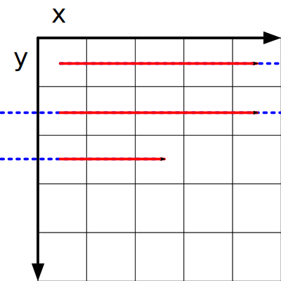
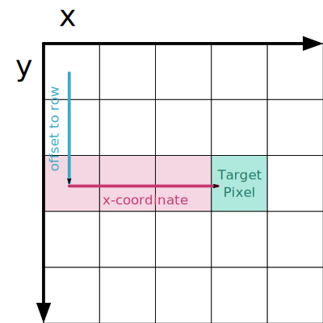
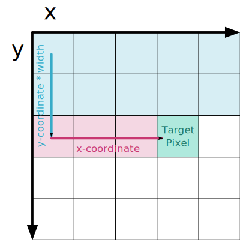

Programming Bitmaps
I planned to initally create a programming section in every article, but I have decided that it could impede learning and more effort could be put into making the articles better. Here is the only programming article, maybe it will help you :)
The content on this page is incomplete and has not been proofread for accuracy. Please report any issues you notice on the GitHub issues page.
Let us start programming now! You can probably stop reading here and do it yourself, but I will provide a description of what I would do in a C-like (mid-level) language.
Programming!
First, I would create a record to represent our pixels and hold our bitmap data:
record pixel_t { uint8_t r, g, b, a; } record bitmap_t { int32_t width, height; pixel_t *data; }
You could just use plain uint8_ts or uint32_t with bitwise ops for the pixels, but I find its easier to manage when its in a structure. Plus, it should not add any overhead.
Now, I will lay out the defitions of the functions that we will use — there are not that many for a basic bitmap object:
errorcode_t bitmap_init(bitmap_t *this, uint32_t width, uint32_t height); void bitmap_free(bitmap_t *this); pixel_t bitmap_get_pixel(bitmap_t *this, uint32_t x, uint32_t y); void bitmap_set_pixel(bitmap_t *this, uint32_t x, uint32_t y, pixel_t colour);
We can almost immidately implement them, but first we will want to figure out how to get from the \(x\) and \(y\) coordinate to an index in the array.
Most of the time, we will have \(x\) going left to right and \(y\) from top to bottom, storing the image y-major and x-minor. That is what we will do here.

To access a pixel in any row, we can just say that it is located at \(\text{OffsetToRow} + x\), where \(x\) is the x-coordinate.

To get the start of the \((y + 1)\)th row, and therefore \(\text{OffsetToRow}\), we can find \(y \cdot \text{Width}\), the start of row \(y\).

Finally, we can plug this back together to find that the offset for any pixel is \(y \cdot \text{Width} + x\). We can then just implement this directly:
let bitmap_pixel_index(x, y, width) = y * width + x;
Now we can start to implement bitmap_init, which is mostly language-specific:
errorcode_t bitmap_init(bitmap_t *this, uint32_t width, uint32_t height) { fill_zero(this, sizeof *this); this->width = width; this->height = height; this->data = allocate(sizeof *this->data * width * height); if (this->data == null) { return errorcode.failure; } return errorcode.success; }
As well as bitmap_free:
void bitmap_init(bitmap_t *this) { free(this->data); }
Then we can implement getting a pixel, which we will do by calculating the index then returning the pixel value:
pixel_t bitmap_get_pixel(bitmap_t *this, uint32_t x, uint32_t y) { return this->data[bitmap_pixel_index(x, y, this->width)]; }
It might seem like we would implement getting a pixel similarly, but we do need to remember there is an alpha channel: